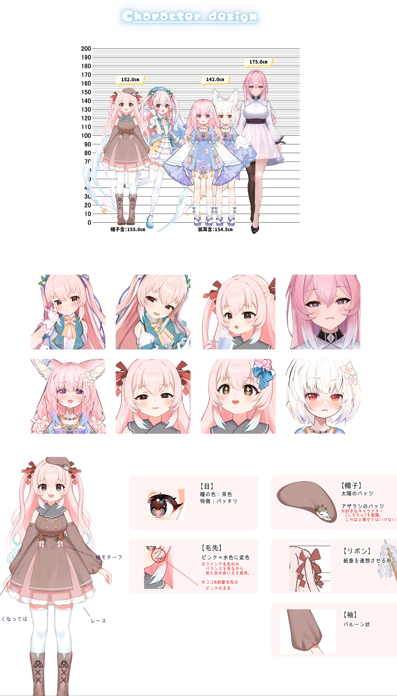

九重紫 -Jiuchong Zi-
通过体验实现某人生前无法达成的梦想来超度他们，以延续自己寿命的亚人。
在几年前还是人类，但现在以亚人的姿态存在。
自称最清楚的平和族，梦想大家能和平相处，每一个人都幸福地在同一个世界生活。
为了这个目标而努力进行活动。
个人档案
昵称： ここのゆ、のゆ、ゆ
身高： 152cm
星座： 巨蟹座
生日： 7月22日
性格： 待人柔和、认真、有些胆小、直率的“豆腐心”
萌点： 治愈系、巫女、亚人、病弱、傲娇
粉丝名： 平和族（变态族） / 一家紫 / 紫细胞 / 兵马俑
最珍视的事物： 家人与粉丝（听众）
喜欢的角色： sirotan
主标签： #こ这个のゆ
同人图标签： #こ这个のゆああと
画师妈妈： 犬山ななみ / ココナツ / 雲雀ひな / クノオ / 燕小酱
🎨 艺术设计： 点击查看 Design
直播内容 - 活动内容
基本是游戏直播和杂谈，有时候会唱歌和画画。
游戏直播以RPG为主，不过会尝试各种不同类型的游戏。
游戏力水平比较低，含有杀戮，犯罪，欺骗的游戏基本都不擅长。特别不擅长FPS，会晕3D。
没有字幕组，自己制作视频和整活（现已成立自己的字幕组）。
个人相关
- 啊加嘛似嘛似：紫老师常用“啊加嘛似嘛似（あじゃますます）”表达感谢。完整的表达通常会在后面加上“ありがとうにゃん 谢谢”。
- 病弱：紫老师大约一至两个月会有身体不佳的情况，通常是发烧。目前带病直播几乎是常态。
- 简称：紫老师全名 ここのえゆかり ⇒ こ这个のゆ ⇒ のゆ ⇒ ゆ。一般简称到こ这个のゆ，直播待机结束画面说的也是こ这个のゆ。
- 整活大师：熟悉本土各种梗，经常会做视频将梗运用到极致，常整得一手好活。自称所有的梗都是从萌娘百科看明白的。很多视频鉴赏回当场一脸懵逼，但第二天就玩得66的。可怕的吸收能力。
- 天哨星：紫老师直播吹得一手好口哨，能熟练吹出《好汉歌》、《Never Gonna Give You Up》等歌曲，弹幕曾在水浒回赐号：天哨星。紫老师便是这108将的第109人。
- 字幕组校对：紫老师曾在oto字幕组当校对。你永远不知道自己推的女人在干什么。
- 理工男气质：紫老师礼貌、努力、懂事，做事一板一眼，颇有理工男气质。
相关梗
- 秦始皇/兵马俑：首次出现在《三句话把我骗到了bilibili》。原梗为早期电信诈骗：“我是秦始皇，现在给我打钱，我起势了封你做大官”。因为视频中出现了“秦始皇让兵马俑给我点了赞”，所以阿紫的粉丝玩此梗时便自称为兵马俑。
- 紫细胞：在直播中抓获某位粉丝的DD行为时，该粉丝自称：推其他人都是我的细胞自己分裂出去的，我是阿紫的单推人。因为此行为类似细胞分裂，所以粉丝玩此梗时会自称是紫细胞。
- 平和族/变态族：粉丝名称一开始为和平族，后因为觉得比起世界和平，更希望粉丝们能内心平和，因此改名为平和族。但是经常会有粉丝做出一些hentai的发言/行为，这部分粉丝被称为变态族。
- 男孩紫：出现于《日本小巫女看王迅找茬》。其中的白发紫在被找茬后，反怼对方说自己是男孩子。DD狂喜：那不是更好。
- 粉丝握手会：在粉丝握手会的直播中，玩起了VR打僵尸（DD）游戏。僵尸（DD）们前来和阿紫握手，被阿紫热烈款待（DD爆头）。
- ×重紫：直播间的当前人气排名是第几名就是几重紫（如当前排名第一就是一重紫）。此梗出自修仙小说体系中表示修仙者能力的层数。
- 旧重紫：通常指初代模型，也可用于形容阿紫比较老的直播内容或动态。
Character Design

← 返回上一页
作品
画廊
历程
紫老师在哔哩哔哩已活跃
... 天
留言板
🛠️ 管理员入口